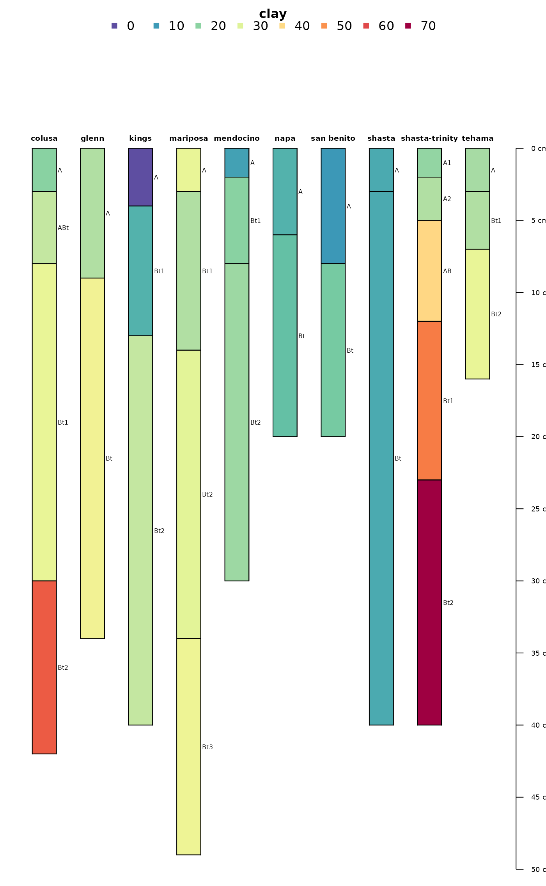
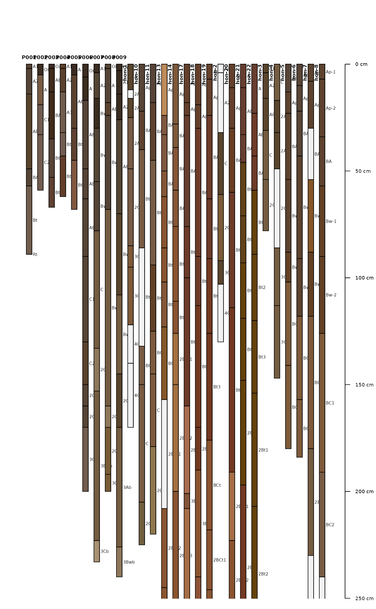
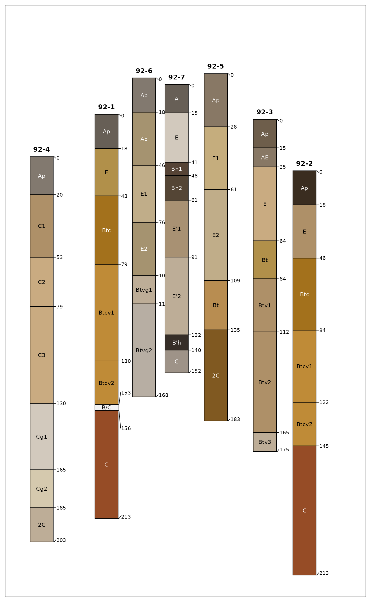

Generate a diagram of soil profile sketches from a SoilProfileCollection object. The Introduction to SoilProfileCollection Objects tutorial contains many examples and discussion of the large number of arguments to this function.
plotSPC(
x,
color = "soil_color",
width = ifelse(length(x) < 2, 0.15, 0.25),
name = hzdesgnname(x),
name.style = "right-center",
label = idname(x),
hz.depths = FALSE,
hz.depths.offset = 0,
hz.depths.lines = fixLabelCollisions,
alt.label = NULL,
alt.label.col = "black",
cex.names = 0.5,
cex.depth.axis = cex.names,
cex.id = cex.names + (0.2 * cex.names),
font.id = 2,
srt.id = 0,
print.id = TRUE,
id.style = "auto",
plot.order = 1:length(x),
relative.pos = 1:length(x),
add = FALSE,
scaling.factor = 1,
y.offset = rep(0, times = length(x)),
x.idx.offset = 0,
n = length(x),
max.depth = ifelse(is.infinite(max(x)), 200, max(x)),
n.depth.ticks = 5,
shrink = FALSE,
shrink.cutoff = 3,
shrink.thin = NULL,
abbr = FALSE,
abbr.cutoff = 5,
divide.hz = TRUE,
hz.distinctness.offset = NULL,
hz.topography.offset = NULL,
hz.boundary.lty = NULL,
axis.line.offset = -2.5,
plot.depth.axis = TRUE,
density = NULL,
show.legend = TRUE,
col.label = color,
col.palette = c("#5E4FA2", "#3288BD", "#66C2A5", "#ABDDA4", "#E6F598", "#FEE08B",
"#FDAE61", "#F46D43", "#D53E4F", "#9E0142"),
col.palette.bias = 1,
col.legend.cex = 1,
n.legend = 8,
lwd = 1,
lty = 1,
default.color = grey(0.95),
fixLabelCollisions = FALSE,
...
)
## S4 method for signature 'SoilProfileCollection,ANY'
## note: y argument in generic definition is not currently used
plot(x, y, ...)a SoilProfileCollection object
quoted column name containing R-compatible color descriptions, or numeric / categorical data to be displayed thematically; see details
scaling of profile widths (typically 0.1 - 0.4)
quoted column name of the (horizon-level) attribute containing horizon designations or labels, if missing hzdesgnname(x) is used. Suppress horizon name printing by setting name = NA or name = ''.
one of several possible horizon designations labeling styles: 'right-center' (aqp default), 'left-top', 'left-center'
quoted column name of the (site-level) attribute used to identify profile sketches
logical, annotate horizon top depths to the right of each sketch (FALSE)
numeric, user coordinates for left-right adjustment for horizon depth annotation; reasonable values are usually within 0.01-0.05 (default: 0)
logical, draw segments between horizon depth labels and actual horizon depth; this is useful when including horizon boundary distinctness and/or fixLabelCollisions = TRUE
quoted column name of the (site-level) attribute used for secondary annotation
color used for secondary annotation text
baseline character scaling applied to all text labels
character scaling applied to depth scale
character scaling applied to label
font style applied to label, default is 2 (bold)
rotation applied to label, only when id.style = 'top'
logical, print label above/beside each profile? (TRUE)
label printing style: 'auto' (default) = simple heuristic used to select from: 'top' = centered above each profile, 'side' = 'along the top-left edge of profiles'
integer vector describing the order in which individual soil profiles should be plotted
vector of relative positions along the x-axis, within {1, n}, ignores plot.order see details
logical, add to an existing figure
vertical scaling of profile depths, useful for adding profiles to an existing figure
numeric vector of vertical offset for top of profiles in depth units of x, can either be a single numeric value or vector of length = length(x). A vector of y-offsets will be automatically re-ordered according to plot.order.
integer specifying horizontal offset from 0 (left-hand edge)
integer describing amount of space along x-axis to allocate, defaults to length(x)
suggested lower depth boundary of plot
suggested number of ticks in depth scale
logical, reduce character scaling for 'long' horizon by 80%
character length defining 'long' horizon names
integer, horizon thickness threshold for shrinking horizon names by 80%, only activated when shrink = TRUE (NULL = no shrinkage)
logical, abbreviate label
suggested minimum length for abbreviated label
logical, divide horizons with line segment? (TRUE), see details
NULL, or quoted column name (horizon-level attribute) containing vertical offsets used to depict horizon boundary distinctness (same units as profiles), see details and codehzDistinctnessCodeToOffset; consider setting hz.depths.lines = TRUE when used in conjunction with hz.depths = TRUE
NULL, or quoted column name (horizon-level attribute) containing offsets used to depict horizon boundary topography (same units as profiles), see details and codehzTopographyCodeToOffset
quoted column name (horizon-level attribute) containing line style (integers) used to encode horizon topography
horizontal offset applied to depth axis (default is -2.5, larger numbers move the axis to the right)
logical, plot depth axis? (default is TRUE)
fill density used for horizon color shading, either a single integer or a quoted column name (horizon-level attribute) containing integer values (default is NULL, no shading)
logical, show legend? (default is TRUE)
thematic legend title
color palette used for thematic sketches (default is rev(brewer.pal(10, 'Spectral')))
color ramp bias (skew), see colorRamp
scaling of thematic legend
approximate number of classes used in numeric legend, max number of items per row in categorical legend
line width multiplier used for sketches
line style used for sketches
default horizon fill color used when color attribute is NA
use aqp::fixOverlap() to attempt fixing hz depth labeling collisions, will slow plotting of large collections; enabling fixes also sets hz.depths.lines = TRUE
other arguments passed into lower level plotting functions
(not used)
Depth limits (max.depth) and number of depth ticks (n.depth.ticks) are suggestions to the pretty function. You may have to tinker with both parameters to get what you want.
The 'side' id.style is useful when plotting a large collection of profiles, and/or, when profile IDs are long.
If the column containing horizon designations is not specified (the name argument), a column (presumed to contain horizon designation labels) is guessed based on regular expression matching of the pattern 'name'-- this usually works, but it is best to manual specify the name of the column containing horizon designations.
The color argument can either name a column containing R-compatible colors, possibly created via munsell2rgb, or column containing either numeric or categorical (either factor or character) values. In the second case, values are converted into colors and displayed along with a simple legend above the plot. Note that this functionality makes several assumptions about plot geometry and is most useful in an interactive setting.
Adjustments to the legend can be specified via col.label (legend title), col.palette (palette of colors, automatically expanded), col.legend.cex (legend scaling), and n.legend (approximate number of classes for numeric variables, or, maximum number of legend items per row for categorical variables). Currently, plotSPC will only generate two rows of legend items. Consider reducing the number of classes if two rows isn't enough room.
Profile sketches can be added according to relative positions along the x-axis (vs. integer sequence) via relative.pos argument. This should be a vector of positions within {1,n} that are used for horizontal placement. Default values are 1:length(x). Care must be taken when both plot.order and relative.pos are used simultaneously: relative.pos specifies horizontal placement after sorting. addDiagnosticBracket and addVolumeFraction use the relative.pos values for subsequent annotation.
Relative positions that are too close will result in overplotting of sketches. Adjustments to relative positions such that overlap is minimized can be performed with fixOverlap(pos), where pos is the original vector of relative positions.
The x.idx.offset argument can be used to shift a collection of pedons from left to right in the figure. This can be useful when plotting several different SoilProfileCollection objects within the same figure. Space must be pre-allocated in the first plotting call, with an offset specified in the second call. See examples below.
A new plot of soil profiles is generated, or optionally added to an existing plot.
Beaudette, D.E., Roudier P., and A.T. O'Geen. 2013. Algorithms for Quantitative Pedology: A Toolkit for Soil Scientists. Computers & Geosciences. 52:258 - 268.
# example data
data(sp1)
# usually best to adjust margins
par(mar=c(0,0,3,0))
# add color vector
sp1$soil_color <- with(sp1, munsell2rgb(hue, value, chroma))
# promote to SoilProfileCollection
depths(sp1) <- id ~ top + bottom
# init horizon designation
hzdesgnname(sp1) <- 'name'
# plot profiles
plotSPC(sp1, id.style='side')
# title, note line argument:
title('Sample Data 1', line=1, cex.main=0.75)
# plot profiles without horizon-line divisions
plotSPC(sp1, divide.hz=FALSE)
# diagonal lines encode horizon boundary distinctness
sp1$hzD <- hzDistinctnessCodeToOffset(sp1$bound_distinct)
plotSPC(sp1, hz.distinctness.offset = 'hzD', name.style = 'center-center')
# plot horizon color according to some property
data(sp4)
depths(sp4) <- id ~ top + bottom
hzdesgnname(sp4) <- 'name'
plotSPC(sp4, color='clay')

# another example
data(sp2)
depths(sp2) <- id ~ top + bottom
hzdesgnname(sp2) <- 'name'
site(sp2) <- ~ surface
# label with site-level attribute: `surface`
plotSPC(sp2, label='surface', plot.order=order(sp2$surface))
# example using a categorical attribute
plotSPC(sp2, color = "plasticity")
# plot two SPC objects in the same figure
par(mar=c(1,1,1,1))
# plot the first SPC object and
# allocate space for the second SPC object
plotSPC(sp1, n=length(sp1) + length(sp2))
# plot the second SPC, starting from the first empty space
plotSPC(sp2, x.idx.offset=length(sp1), add=TRUE)

##
## demonstrate horizon designation shrinkage
##
data("jacobs2000")
# shrink "long" horizon names
plotSPC(
jacobs2000,
name = 'name',
name.style = 'center-center',
shrink = TRUE,
cex.names = 0.8
)
# shrink horizon names in "thin" horizons
plotSPC(
jacobs2000,
name = 'name',
name.style = 'center-center',
shrink = TRUE,
shrink.thin = 15,
cex.names = 0.8,
)
##
## demonstrate adaptive legend
##
data(sp3)
depths(sp3) <- id ~ top + bottom
# make some fake categorical data
horizons(sp3)$fake.data <- sample(letters[1:15], size = nrow(sp3), replace=TRUE)
# better margins
par(mar=c(0,0,3,1))
# note that there are enough colors for 15 classes (vs. previous limit of 10)
# note that the legend is split into 2 rows when length(classes) > n.legend argument
plotSPC(sp3, color='fake.data', name='fake.data', cex.names=0.8)
# make enough room in a single legend row
plotSPC(sp3, color='fake.data', name='fake.data', cex.names=0.8, n.legend=15)
##
## demonstrate y.offset argument
## must be of length 1 or length(x)
##
# example data and local copy
data("jacobs2000")
x <- jacobs2000
hzdesgnname(x) <- 'name'
# y-axis offsets, simulating a elevation along a hillslope sequence
# same units as horizon depths in `x`
# same order as profiles in `x`
y.offset <- c(-5, -10, 22, 65, 35, 15, 12)
par(mar = c(0, 0, 2, 2))
# y-offset at 0
plotSPC(x, color = 'matrix_color', cex.names = 0.66)
# constant adjustment to y-offset
plotSPC(x, color = 'matrix_color', cex.names = 0.66, y.offset = 50)
# attempt using invalid y.offset
# warning issued and default value of '0' used
# plotSPC(x, color = 'matrix_color', cex.names = 0.66, y.offset = 1:2)
# variable y-offset
# fix overlapping horizon depth labels
par(mar = c(0, 0, 1, 0))
plotSPC(
x,
y.offset = y.offset,
color = 'matrix_color',
cex.names = 0.75,
hz.depths = TRUE,
hz.depths.offset = 0.05,
fixLabelCollisions = TRUE,
name.style = 'center-center'
)
# random y-axis offsets
yoff <- runif(n = length(x), min = 1, max = 100)
# random gradient of x-positions
xoff <- runif(n = length(x), min = 1, max = length(x))
plotSPC(x,
relative.pos = xoff,
y.offset = yoff,
color = 'matrix_color',
cex.names = 0.66,
hz.depths = TRUE,
name.style = 'center-center'
)
# align / adjust relative x positions
set.seed(111)
pos <- alignTransect(xoff, x.min = 1, x.max = length(x), thresh = 0.5)
#> 47 iterations
# y-offset is automatically re-ordered according to
# plot.order
par(mar = c(0.5, 0.5, 0.5, 0.5))
plotSPC(x,
plot.order = pos$order,
relative.pos = pos$relative.pos,
y.offset = yoff,
color = 'matrix_color',
cex.names = 0.66,
hz.depths = TRUE,
name.style = 'center-center'
)
box()
